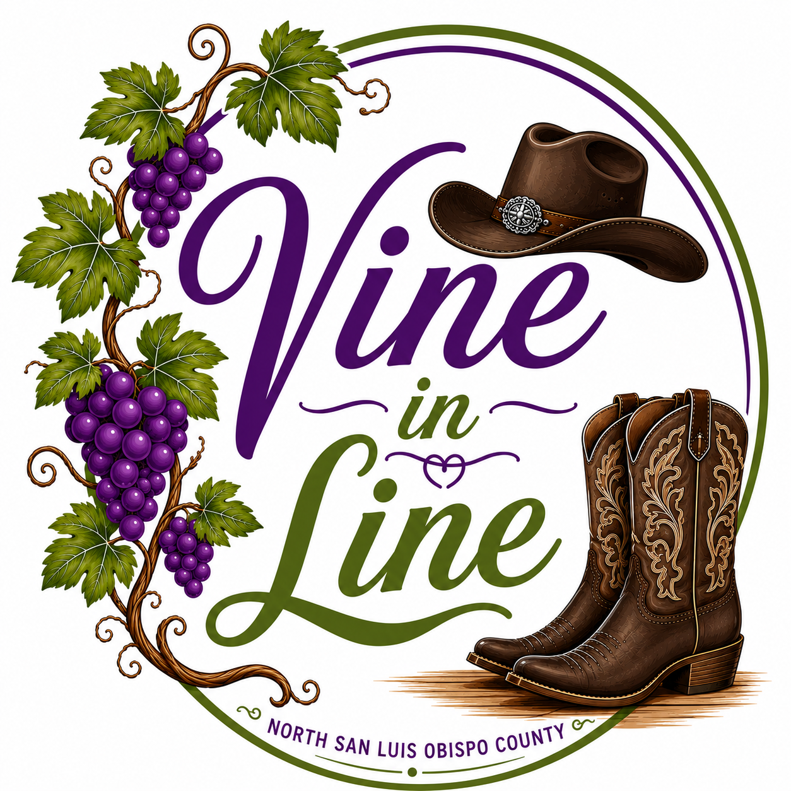

Vine In LineMonthly updates, schedule notes, featured dances, and announcements for Vine In Line dancers.
We are excited to keep dancing through July with weekly classes in Paso Robles and Atascadero. Whether you are brand new or ready for more challenging dances, there is a class for you.
Tuesday classes continue at Centennial Park in Paso Robles.
6:00 PM – 7:00 PM: Beginner / High Beginner
7:00 PM – 8:00 PM: Improver / High Improver
Thursday classes are held at Community Church of Atascadero in the Fellowship Hall.
4:30 PM – 5:00 PM: Warmup & Quick Reviews
5:00 PM – 6:30 PM: Intermediate / Advanced Lesson
Thursday classes will only be held on July 2, July 9, and July 30.
No Thursday class on July 16 or July 23.
Check the List of Dances page for stepsheets, demo videos, and tutorials for dances we have learned in class.
View DancesNo partner is needed. Wear comfortable shoes, bring water, and come ready to have fun.
Drop-in cost is $10 per night. Cash, check, or Venmo may be available depending on class.
Have a dance request, question, or event idea? We would love to hear from you.
Visit the Contact page to reach out.
Contact Us